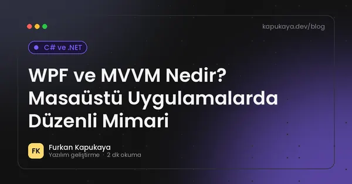
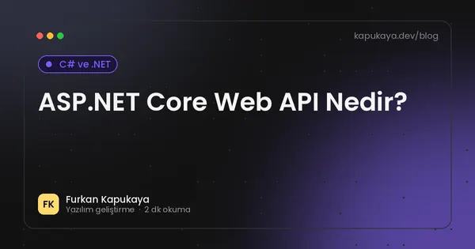
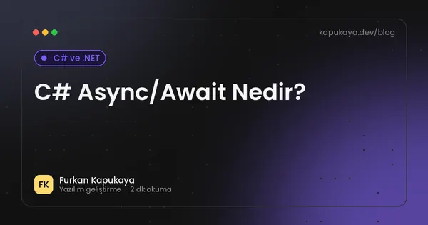
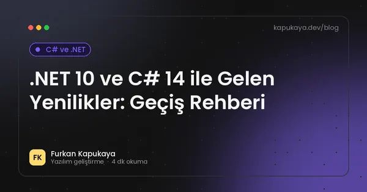
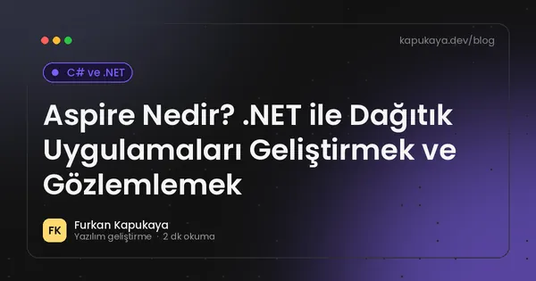
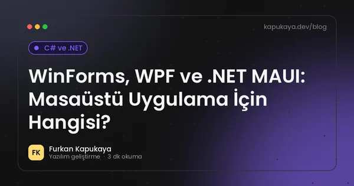

C# ve .NET
C#, .NET 10, ASP.NET Core, Blazor, Entity Framework, WPF ve modern .NET geliştirme üzerine teknik yazılar.
21 yazı

C# Nullable Reference Types: NullReferenceException'a Derleme Anında Veda
C#'ta nullable reference types özelliğinin mantığı, uyarıların anlamı, ? ve ! işaretlerinin doğru kullanımı, mevcut projelerde kademeli geçiş ve sık yapılan hatalar.
Yazıyı oku
.NET Framework'ten Modern .NET'e Geçiş: Adım Adım Yol Haritası
Eski .NET Framework uygulamalarını .NET 10'a taşımanın faydaları, uyumluluk analizi, kütüphane güncellemeleri, WinForms ve WPF taşıma, ASP.NET'ten ASP.NET Core'a geçiş stratejileri.
Yazıyı oku
Avalonia ile Çapraz Platform Masaüstü Uygulama: Windows, macOS ve Linux
.NET ile Windows, macOS ve Linux'ta çalışan masaüstü uygulamalar için Avalonia UI'ın özellikleri, WPF ile benzerlikleri, MAUI ile karşılaştırması ve hangi projelere uygun olduğu.
Yazıyı oku
.NET'te Birim Testi: xUnit ile Güvenle Değişiklik Yapmak
.NET projelerinde birim testinin faydaları, xUnit ile test yazma, Arrange-Act-Assert düzeni, sahte nesneler, test edilebilir kod tasarımı ve CI ile otomatik test çalıştırma.
Yazıyı oku
.NET'te Loglama: ILogger, Yapılandırılmış Loglar ve İyi Uygulamalar
.NET'te ILogger ile loglama, log seviyeleri, yapılandırılmış loglama, kişisel verilerin loglardan uzak tutulması, log saklama ve izleme araçlarıyla entegrasyon.
Yazıyı oku
Entity Framework Core Nedir?
.NET uygulamalarında DbContext, migrations ve Entity Framework Core rolünü anlaşılır şekilde öğrenin.
Yazıyı oku
Blazor Nedir? C# ile Web Arayüzü Geliştirme Rehberi
Blazor'un çalışma modelleri, bileşen yapısı, avantajları, sınırlamaları ve iş uygulamaları ile yönetim panelleri için ne zaman tercih edilmesi gerektiği.
Yazıyı oku
C# LINQ Rehberi: Where, Select, GroupBy ve Performans İpuçları
C# LINQ sorgularının temel operatörleri, ertelenmiş çalıştırma, Entity Framework ile kullanımı, sık yapılan performans hataları ve örnek kodlar.
Yazıyı oku
C# 14 Yenilikleri: Extension Members, field Anahtar Kelimesi ve Daha Fazlası
.NET 10 ile gelen C# 14'ün öne çıkan özellikleri; extension members, field anahtar kelimesi, null-conditional atama, span dönüşümleri ve lambda parametre değiştiricileri örneklerle.
Yazıyı oku
C# Record Tipleri: Ne Zaman class Yerine record Kullanılmalı?
C# record ve record struct tiplerinin değer eşitliği, değişmezlik, with ifadesi, DTO ve domain modellerinde kullanımı ile class'tan farkları ve dikkat edilmesi gerekenler.
Yazıyı oku
WPF ve MVVM Nedir? Masaüstü Uygulamalarda Düzenli Mimari
WPF'de MVVM deseninin Model, View ve ViewModel katmanları, veri bağlama, komutlar, CommunityToolkit.Mvvm ile kod azaltma ve test edilebilir masaüstü uygulama geliştirme.
Yazıyı oku
ASP.NET Core Web API Nedir?
ASP.NET Core Web API, controller, dependency injection, servis katmanı ve veri erişimi için pratik bir giriş.
Yazıyı oku
C# Async/Await Nedir?
C# içinde Task, async ve await ile asenkron programlamanın pratik temellerini öğrenin.
Yazıyı oku
.NET'te Dependency Injection: Servis Ömürleri ve Sık Yapılan Hatalar
.NET'te bağımlılık enjeksiyonunun mantığı, Singleton, Scoped ve Transient servis ömürleri, constructor injection, keyed services ve kaçınılması gereken yaygın hatalar.
Yazıyı oku
ASP.NET Core Minimal API ile Hızlı Web Servisi Geliştirme
Minimal API'nin ne olduğu, controller yaklaşımından farkı, endpoint gruplama, doğrulama, OpenAPI, kimlik doğrulama ve proje yapısı önerileri.
Yazıyı oku
.NET 10 ve C# 14 ile Gelen Yenilikler: Geçiş Rehberi
.NET 10 LTS sürümünün destek süresi, C# 14 dil özellikleri, performans ve ASP.NET Core yenilikleri ile mevcut projeleri güncellerken izlenecek adımlar.
Yazıyı oku
Aspire Nedir? .NET ile Dağıtık Uygulamaları Geliştirmek ve Gözlemlemek
.NET Aspire olarak tanıtılan Aspire'ın uygulama modeli, servis keşfi, hazır entegrasyonlar, geliştirme paneli ve OpenTelemetry ile gözlemlenebilirlik özelliklerine giriş.
Yazıyı oku
.NET'te Yapılandırma: appsettings, Options Pattern ve Gizli Bilgiler
.NET uygulamalarında appsettings.json, ortam değişkenleri, ortam bazlı ayarlar, Options pattern ile tip güvenli yapılandırma ve parola ile API anahtarlarının güvenli saklanması.
Yazıyı oku
.NET BackgroundService ile Arka Planda Çalışan İşler
.NET'te BackgroundService ve IHostedService ile arka plan işleri yazmak, PeriodicTimer, scoped servis kullanımı, hata yönetimi, Windows Service ve Linux systemd olarak çalıştırma.
Yazıyı oku
WinForms, WPF ve .NET MAUI: Masaüstü Uygulama İçin Hangisi?
Windows Forms, WPF ve .NET MAUI teknolojilerinin güçlü ve zayıf yönleri, kullanım alanları ve işletme masaüstü uygulamaları için seçim kriterleri.
Yazıyı oku
ASP.NET Core Uygulamalarında Performans Optimizasyonu
Caching, async I/O, sorgu optimizasyonu, logging ve response sürelerini iyileştirmek için uygulanabilir yöntemler.
Yazıyı oku
Aramanızla eşleşen yazı bulunamadı. Farklı bir kelime deneyin veya tüm yazıları gösterin.